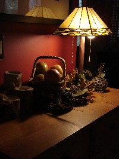

THANKSGIVING

This is a no-brainer recipe I made up to be quick and easy.
Way Easy Baked Yam and Apple Dish
1 can of yams (I think it’s a #2 can)
2-3 apples (baking type apples like Fuji or Rome) ½ cup chopped walnuts (or pecans if you like) ½ cup brown sugar ½ stick butter 1 tsp cinnamon ½ tsp nutmeg ½ tsp saltPreheat oven to 350 degrees.
Use nonstick spray (or butter) to grease 9” sq. baking dish. Drain yams and place on bottom of dish. Cut apples width-wise to create apple circles (then use a paring knife to remove the seed “star” so the apples look like donuts) and place on top of yams. Sprinkle seasonings evenly over yams/apples. Then place slices of butter equally over the top. Sprinkle brown sugar and walnuts on top. Cover loosely with foil and bake for about thirty minutes (a little longer doesn’t hurt.) Remove foil for last few minutes to crisp the top. Or not. This serves 4-6 people and is easy to double. You could top with marshmallows if you want, but my family doesn’t like them.